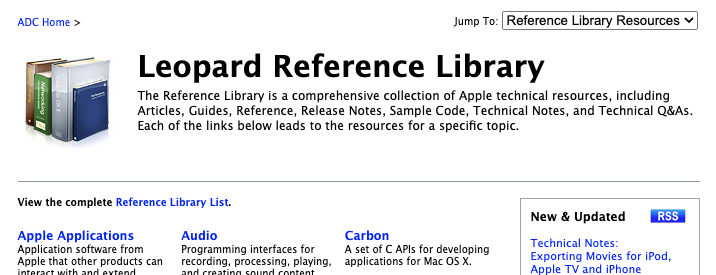

Apple Developer Connection Reference Library (Leopard,
July 2009
)
106,580 HTML files | 2,325 PDFs | 1,356 sample code .dmg files.
Main page

Listings:
Everything
Reference
Sample Code
Guides
Articles
(using
wayback
)
Technical Q&As
Technical Notes
Legacy Documents
Mac OS X
Mac OS X Technology Overview
Objective-C:
Objective-C 1.0
(Tiger)
Objective-C 2.0
(Leopard)
Objective-C Topic Listing
Foundation:
Foundation Framework Reference
Foundation Functions Reference
Foundation Data Types
Foundation Constants Reference
AppKit:
AppKit Framework Reference
AppKit Functions Reference